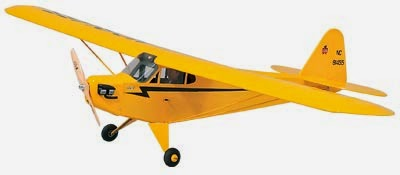
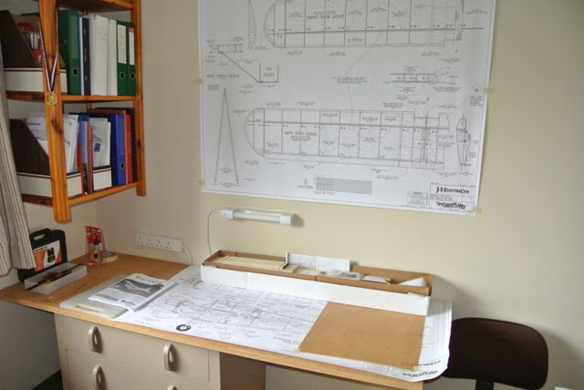

Radio Controlled Aircraft
In December 2013 I ordered a kit from the local model shop. After various causes for delay it finally arrived last Friday (April 4th). It was supposed to be a winter project, but now it might be ready in time for the bad winter weather!
Having not built a model since I was 16, I thought it best to start with a kit. Not an 'almost ready to fly' type that just needs assembly and the addition of motor and servos, but something with a plan and sheets of balsa and ply, albeit with the shaped parts die-cut or laser-cut. From an RC flying point of view I wanted to move up slightly from my high-wing trainer, but I wanted something that was semi-scale. And I wanted to try electric power. So I chose the Great Planes' Piper J-3 ElectriCub. At 1.49m wingspan it is only a little smaller than my IC trainer and so should fit easily into our small car.
I had built a work table in my study from an old chest of draws and a sheet of MDF, covered in cork tiles that I had kept in the garage for over 20 years.
The plans appear to be well drawn, with good detail, and the instructions look comprehensive. Time will tell if these first impressions are right. I bought a decent hobby knife, a razor saw and a razor plane, together with some thin CA and 5-minute epoxy (I already had medium CA and 30-minute epoxy) and started my build. I decided to try some baking parchment as a plan protector. Although it is brown, it seems to be sufficiently transparent.
These pages (listed in the panel on the right) record not only my progress, but also the problems that I encounter and, hopefully, my solutions.